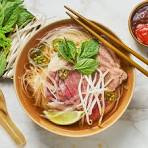

Pho

Description
Pho is a nooodle soup dish from Vietnam that is very popular with many people around the world.
It is the perfect dish to have on a rainy or cold day, or even on a hot one. It is know to have a lot of ingredients
and a lot of steps, so please follow along carefully.
Ingredients:
- Two large onions
- 5 oz ginger
- 10 star anise
- 4 cinnamon quills
- 4 cardmon pods
- 3 spice cloves
- 1.5 tbsp coriander seeds
- 3 lb beef brisket
- 2 lb meaty beef bones
- 2 lb marrow bones
- 3.75 quarts of water
- 2 tbsp white sugar
- 1 tbsp salt
- 3 tbsp fish sauce
- 1.5 oz dried rice sticks per bowl
- 1 oz beef tenderloin, raw, very thinly slicedper bowl
- 3-5 brisket slices per bowl
- beansprouts(only a handful)
- 3-5 sprigs of Thai basil
- cilantro
- lime wedges
- finely sliced red chili
- hoisin sauce
- Sriracha(For my spicy folks)
Steps:
- Heat a heavy based skillet over high heat (no oil) until smoking
- Place onion and ginger in a pan cut side down. Cook for a few minutes until it's charred, then turn. Remove and set aside.
- Toast spices lightly in a dry skillet over medium heat for 3 minutes.
- Rinse bones and brisket then cover with water in a large stock pot.
- Boil for 5 minutes and then drain.
- Rinse each bone and brisket under tap water.
- Wipe pot clean and then bring 3.75 quarts of water to a boil.
- Add bones, brisket, ginger, onion, and spices.
- Add onion, ginger, spices, sugar, and salt - water should just barely cover everything.
- Cover with lid. Simmer for 3 hours.
- Remove brisket (Should be fall apart tender), cool then refrigerate for later.
- Simmer remaining soup Uncovered for 40 minutes.
- Strain broth into another pot, discard bones and spices. Should be about 2.65 quarts (10 cups).If there are a lot more, then reduce.
- Add fish sauce, adjust salt and sugar if needed. Broth should be beefy, fragrant with spices, savoury and barely sweet.
- Prepare rice noodles per packet, just prior to serving.
- Place noodles in bowl. Top with raw beef and brisket.
- Ladle over about 400 / 14 oz hot broth - will cook beef to medium rare.
- Serve with Toppings on the side!